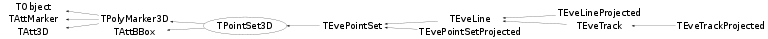

class TPointSet3D: public TPolyMarker3D, public TAttBBox
TPolyMarker3D using TPointSet3DGL for direct OpenGL rendering. Supports only elementary marker types: 4, 20, 24 : round points, size in pixels; 2, 3, 5 : crosses, size in scene units; 28 : as above, line width 2 pixels; all other : square points, size in pixels. Marker-size (from TAttMarker) is multiplied by 5! An identification of type TObject* can be assigned to each point via SetPointId() method. Set the fOwnIds flag if the ids are owned by the point-set and should be deleted when pointset is cleared or destructed. Copy-constructor and assignment operator COPIES the ids if the are not owned and CLONES them if they are owned. The ids are not streamed.
Function Members (Methods)
public:
protected:
| void | TAttBBox::AssertBBoxExtents(Float_t epsilon = 0.005) |
| void | TAttBBox::BBoxCheckPoint(const Float_t* p) |
| void | TAttBBox::BBoxCheckPoint(Float_t x, Float_t y, Float_t z) |
| void | TAttBBox::BBoxClear() |
| void | TAttBBox::BBoxInit(Float_t infinity = 1e6) |
| void | TAttBBox::BBoxZero(Float_t epsilon = 0, Float_t x = 0, Float_t y = 0, Float_t z = 0) |
| void | CopyIds(const TPointSet3D& t) |
| virtual void | TObject::DoError(int level, const char* location, const char* fmt, va_list va) const |
| void | TObject::MakeZombie() |
Data Members
public:
| enum TObject::EStatusBits { | kCanDelete | |
| kMustCleanup | ||
| kObjInCanvas | ||
| kIsReferenced | ||
| kHasUUID | ||
| kCannotPick | ||
| kNoContextMenu | ||
| kInvalidObject | ||
| }; | ||
| enum TObject::[unnamed] { | kIsOnHeap | |
| kNotDeleted | ||
| kZombie | ||
| kBitMask | ||
| kSingleKey | ||
| kOverwrite | ||
| kWriteDelete | ||
| }; |
protected:
| Float_t* | TAttBBox::fBBox | ! Dynamic Float_t[6] X(min,max), Y(min,max), Z(min,max) |
| TRefArray | fIds | User-provided point identifications |
| Int_t | TPolyMarker3D::fLastPoint | The index of the last filled point |
| Color_t | TAttMarker::fMarkerColor | Marker color index |
| Size_t | TAttMarker::fMarkerSize | Marker size |
| Style_t | TAttMarker::fMarkerStyle | Marker style |
| Int_t | TPolyMarker3D::fN | number of points |
| TString | TPolyMarker3D::fName | name of polymarker |
| TString | TPolyMarker3D::fOption | options |
| Bool_t | fOwnIds | Flag specifying id-objects are owned by the point-set |
| Float_t* | TPolyMarker3D::fP | [3*fN] Array of X,Y,Z coordinates |
Class Charts
{kind=link}
{kind=link}
{kind=link}
{kind=link}

Function documentation
void SetPointId(TObject* id)
Set id of last point. Use this method if you also use TPolyMarker3D::SetNextPoint().
void PointSelected(Int_t n)
This virtual method is called from TPointSet3DGL when a point is selected. At this point it just prints out n and id of the point (if it exists). To make something useful out of this do: a) subclass and re-implement this method; b) extend this class to include TExec or some other kind of callback.